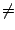

b, or ST
b, or ST
 a, where a = log(A) and
b = log(B). In the first case we accept H0, in the latter case
we reject it.
a, where a = log(A) and
b = log(B). In the first case we accept H0, in the latter case
we reject it.
| [Stat Inf II classnotes, ISI, Kolkata] |
Set up: We have data X1,X2,... iid with density unknown density f. We want to test
H0: f = f = f0 Vs H1: f = f1.We had defined
Zi = log(f1(Xi)/f0(Xi)The Zi's are iid and Sm =
 1,...,mZi is the log likelihood ratio based
on sample of size m.
1,...,mZi is the log likelihood ratio based
on sample of size m.
SPRT(A,B), 0 < B < 1 < A, is the sequential test that
continues sampling until a stopping time T, where T is the first time when
ST
b, or ST
a, where a = log(A) and
b = log(B). In the first case we accept H0, in the latter case
we reject it.
We have also seen the following resuts:
 ) = 1. This is Stein's lemma, and uses (1) in the
proof.
) = 1. This is Stein's lemma, and uses (1) in the
proof.
E(exp(tST)/φ(t)T) = Pg(T is finite),where g is as before.
The basic modus operandi is follows. If E(Z)

0, then we shall use Wald's first equation to getE(T) = E(ST)/E(Z),and then we shall try to find E(ST). If, however, E(Z)=0, then we shall use Wald's second equation, to get
E(T) = E(ST2)/E(Z2).By virtue of (1), the denominator cannot vanish. So in this case the problem reduces to finding E(ST2).
Both the cases are very similar, and so we shall do only the first case (i.e., when E(Z) 0.) Here we need to find E(ST). Now, by Wald's approximation,
E(ST) = b P(STAlso,
P(STSo it suffices to be able to find P(ST
a).
Exercise SPRT4.1:
Use the funadamental idenitity and Stein's lemma to show that for SPRT, we
have
E(exp(tST)/φ(t)T)=1. [Hint: By Stein's lemma this boils down to showing Pg(T is finite) = 1. This follows by a simple argument from the fact that P(T is finite) = 1. ] |
Suppose that we find nonzero d such that φ(d)=1. Then with t=d, we have from the fact that
E(exp(dST)) = 1.Using Wald's approximation again we have
1=E(exp(dST) = exp(db) P(STSince the two probabilities add up to 1, hence we can now solve for P(ST
a).
Ifthen there exists nonzero d such that φ(d)=1.
- φ(t) exists (i.e., is finite) for all t in some open interval (r,s) containing 0, (r,s may be infinite)
- φ(t) goes to infinity as t approaches r from right, or s from left,
- E(Z) 0,
|
Exercise SPRT4.2:
Show that φ'(0)
0, and φ''(t) > 0 over (r,s).
[Hint: Differentiate under integral sign. ] |
|
Exercise SPRT4.3:
Hence conclude that the required d exists.
[Hint: A convex function has unique minimum. Can 0 be the minimum? ] |